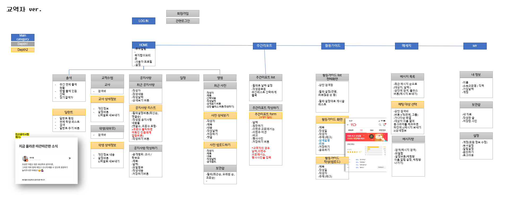
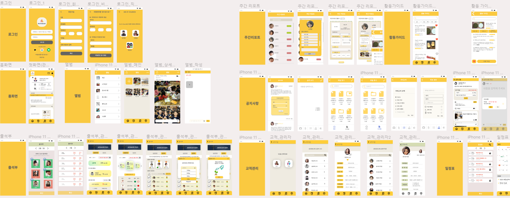

Recent project
"온라인 교육 플랫폼-두잇처치"
코로나 사태로 인해서 언택트를 지향하는 온라인 플랫폼의 중요성은 날로 강조되고 있습니다. 이는 교육 시장에서도 마찬가지로, 이미 시중에는 온라인으로 학생들의 학습상태 관리를 지원하는 ‘클래스팅’, ‘아이엠스쿨‘, ‘키즈노트’와 같은 플랫폼들이 존재하지만 교회학교 현장에는 학부모가 자녀들이 교회에서 어떤 것을 배우고 어떤 활동을 하는지 확인가능한 교회학교 맞춤형 플랫폼은 없다는 점에서 교회학교의 운영과 관리를 돕는 전문 서비스를 기획하게 되었습니다.

-IA(Information Architecture)설계
사용자 조사를 토대로 필요한 기능을 정리하고 직관적으로 트리구조를 이용하여 IA를 설계하였습니다. 세부적인 화면을 구상하고 기획한 뒤 정리하는 과정을 통해 필요한 기능과 불필요한 기능이 무엇인지 고민해보며 효과적으로 구조화하였습니다.
-Wireframe
서비스에 필요한 주요 기능을 설정하고 WIREFRAME을 제작하였습니다. 주요기능별 세부적인 프레임워크를 정의하고 각 인터페이스가 의미하는 것은 무엇인지 설정하였습니다. 경쟁사 벤치마킹을 통해 우리 서비스만이 UX/UI 측면에서 보여줄 수 있는 차별성은 무엇일지도 동시에 고민해볼 수 있었습니다.

-Prototype
앞서 제작한 와이어프레임을 바탕으로 본격적으로 서비스 디자인을 하였고, Figma툴을 이용하여 프로토타입을 제작하였습니다. 이후, 사용성 검증(feasibility test)을 통해 UX/UI측면에서 수정하고 리디자인하며 보완할 수 있었습니다.
-Re-design video
사용성 검증(feasibility test)을 통해 UX/UI고려한 화면을 리디자인하고 이를 바탕으로 프론트엔드 작업을 수행한 결과입니다.